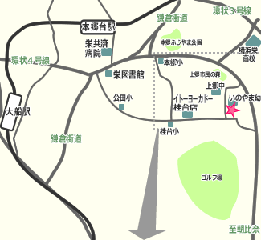
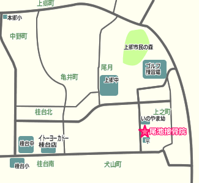

交 通 ア ク セ ス
| 所在地 | 〒247-0025 横浜市栄区上之町42-1（上郷郵便局となり） 045-893-2349 |
|---|---|
| 交通 | バス ＪＲ根岸線港南台駅より桂台中央行き(犬山南下車) 系統番号(港33・港83・港87) ＪＲ大船駅より上之行き(犬山南下車) 系統番号(船11) |
| 広域地図 |  |
| 拡大地図 |  |
| googleマップ | |
| 駐車場 | お車は当院前に２台駐車可能です。 ご来院順となります。 駐車のご予約は受け付けておりません。 |
横浜市栄区・港南区で接骨院をお探しなら…「痛い所に手がとどく」「かゆい所も手がとどく」そんな治療を目指す尾池接骨院です。
| 所在地 | 〒247-0025 横浜市栄区上之町42-1（上郷郵便局となり） 045-893-2349 |
|---|---|
| 交通 | バス ＪＲ根岸線港南台駅より桂台中央行き(犬山南下車) 系統番号(港33・港83・港87) ＪＲ大船駅より上之行き(犬山南下車) 系統番号(船11) |
| 広域地図 |  |
| 拡大地図 |  |
| googleマップ | |
| 駐車場 | お車は当院前に２台駐車可能です。 ご来院順となります。 駐車のご予約は受け付けておりません。 |